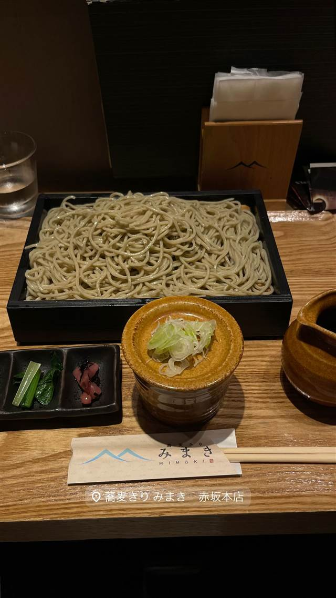
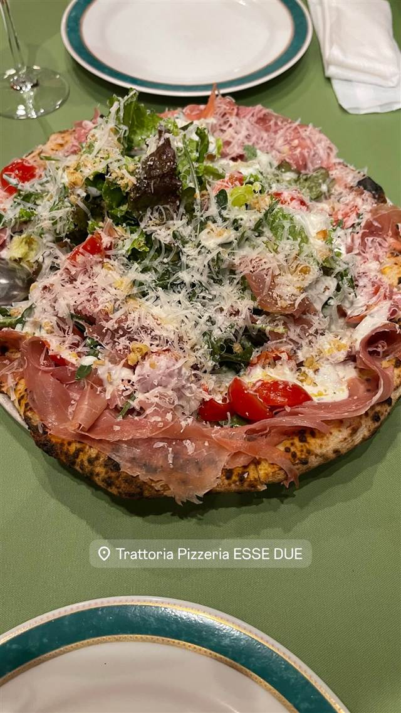
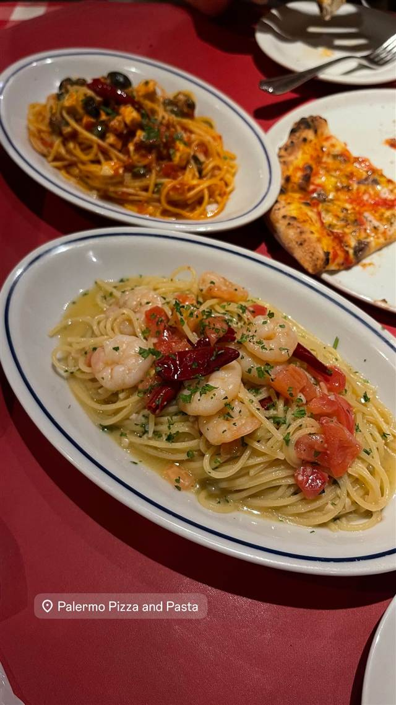
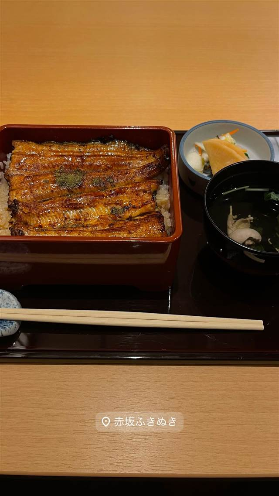

蕎麦きり みまき 赤坂本店
「みよ田」の姉妹店、季節で産地を変える信州産そば粉のそば
蕎麦きり みまき 赤坂本店
信州そば専門店「みよ田」の姉妹ブランドとして2016年に赤坂一ツ木通りに開業。信州産そば粉を季節ごとに産地を変えて使い分け、本格的なそばを気軽に楽しめる一軒。
TRIVIA
豆知識
- 信州そば専門店「みよ田」の姉妹ブランドとして誕生
- そば通だけでなく若者や女性にも入りやすいカジュアルな一軒として開業
REVIEWS
世間の評判
3.49食べログ
喉越し良い蕎麦と丼のセット
- 喉越しが良くしっかりしたコシのある蕎麦の風味を評価する声が多い
- カツ丼や天丼と組み合わせた食べ応えあるセットを評価する声が多い
- 手頃な価格でこの質ならコストパフォーマンスが良いという声が多い
- ランチタイムはしばしば外まで行列ができるほど混雑するという声が多い
食べログ 口コミ709件
| 創業 | 2016年9月20日開業 |
|---|---|
| 系譜 | 信州そばきり「みよ田」（王滝グループ）の姉妹店 |
| 看板 | せいろ蕎麦、天然車海老の天せいろ |
| こだわり | 信州産そば粉を使用し、季節によって産地を変えて信州各地の味を楽しめる |
| どこから | 都心 |
| 行くなら | 行列 |
| 営業時間 | 月〜金 10:00-22:00 土・日 休み |
| 予算 | 昼 ¥1,000～¥1,999 夜 ¥1,000～¥1,999 |
| 定休日 | 土日祝 |
| 場所 | 赤坂見附 東京都港区赤坂4-2-3 |
| メモ | 赤坂見附駅近く、赤坂一ツ木通り沿い |
食べたもの：せいろ蕎麦
NEARBY
近い店・同じ系統の店
-
 ★
豚骨 赤坂見附駅
なかご
豚骨100%なのに透き通る24時間煮込みの純粋豚そば
昼 ¥1,000～¥1,999 夜 ¥1,000～¥1,999
★
豚骨 赤坂見附駅
なかご
豚骨100%なのに透き通る24時間煮込みの純粋豚そば
昼 ¥1,000～¥1,999 夜 ¥1,000～¥1,999
-
 ★
焼肉 赤坂
炭火焼肉赤坂大関
厚切り肉の草分け、A5和牛を味わう「牛一匹」コース
夜 ¥6,000～¥7,999
★
焼肉 赤坂
炭火焼肉赤坂大関
厚切り肉の草分け、A5和牛を味わう「牛一匹」コース
夜 ¥6,000～¥7,999
-

ピザ 赤坂 Trattoria Pizzeria ESSE DUE 赤坂本店 赤坂20年超の老舗、石窯で焼く本格ナポリピッツァ 昼 ¥1,000～¥1,999 夜 ¥5,000～¥5,999 -

ピザ 赤坂見附 パレルモ 赤坂店 小田急グループが展開する南イタリア料理のトラットリア 昼 ¥1,000～¥1,999 夜 ¥3,000～¥3,999 -

うなぎ 赤坂 赤坂ふきぬき 東京で唯一とされる本格的な関東風ひつまぶしを100年続くタレで提供する 昼 ¥3,000～¥3,999 夜 ¥8,000～¥9,999 -
 そば 乃木坂駅
おそばの甲賀
赤坂砂場で14年修行した店主が営む、ミシュラン掲載の石臼挽きそば
昼 ¥2,000～¥2,999 夜 ¥6,000～¥7,999
そば 乃木坂駅
おそばの甲賀
赤坂砂場で14年修行した店主が営む、ミシュラン掲載の石臼挽きそば
昼 ¥2,000～¥2,999 夜 ¥6,000～¥7,999